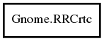

RRCrtc
Object Hierarchy:

Description:
public class RRCrtc
Namespace: Gnome
Package: gnome-desktop-3.0
Content:
Methods:
- public
bool can_drive_output (RROutput output)
- public RRMode get_current_mode ()
- public RRRotation get_current_rotation ()
- public
bool get_gamma (int size, ushort red, ushort green, ushort blue)
- public
uint32 get_id ()
- public void get_position (
int x, int y)
- public RRRotation get_rotations ()
- public
bool set_config_with_time (uint32 timestamp, int x, int y, RRMode mode, RRRotation rotation, RROutput outputs, int n_outputs) throws Error
- public void set_gamma (
int size, ushort red, ushort green, ushort blue)
- public
bool supports_rotation (RRRotation rotation)